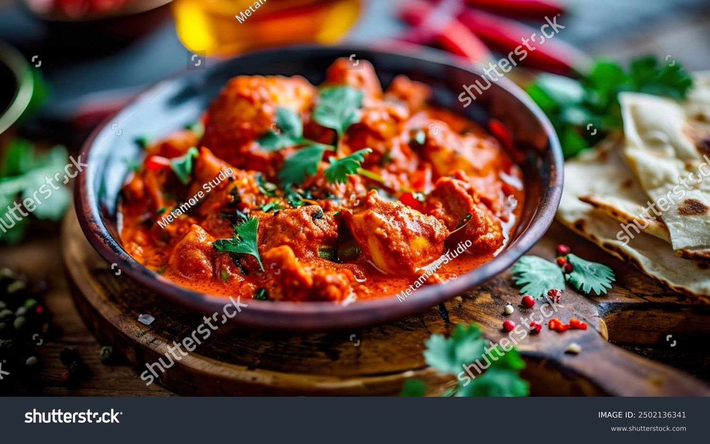

Chicken Tikka Masala

Description
Chicken Tikka Masala is a popular Indian-inspired dish featuring marinated,
grilled chicken chunks simmered in a rich, creamy tomato-based sauce infused with aromatic spices like cumin,
coriander, and garam masala. Often served with rice or naan, it balances smoky, tangy, and mildly spicy flavors,
making it a favorite worldwide.
Ingredients
Chicken Tikka:
- 1 lb (450g) boneless chicken (thighs or breasts), cut into chunks
- 0.5 cup yogurt (or dairy-free alternative)
- 1 tbsp lemon juice
- 2 tsp garam masala
- 1 tsp cumin
- 1 tsp coriander
- 1 tsp paprika
- ½ tsp turmeric
- ½ tsp salt
- 2 cloves garlic, minced
- 1-inch ginger, grated
Masala Sauce:
- 2 tbsp oil or butter (use dairy-free if needed)
- 1 onion, finely chopped
- 2 cloves garlic, minced
- 1-inch ginger, grated
- 1 tsp cumin
- 1 tsp coriander
- 1 tsp garam masala
- 1 tsp paprika
- ½ tsp turmeric
- ½ tsp chili powder (adjust to taste)
- 1 can (14 oz) crushed tomatoes
- ½ cup coconut milk or dairy-free cream (or regular cream)
- Salt to taste
- Fresh cilantro for garnish
Steps
- Marinate Chicken
- In a bowl, mix yogurt, lemon juice, garlic, ginger, garam masala, cumin, coriander, paprika, turmeric, and salt to make a marinade.
- Add the chicken chunks and coat them well. Cover and let marinate for at least 30 minutes (or overnight for deeper flavor).
- Cook Chicken
- Heat a grill pan, skillet, or oven to medium-high heat.
- Cook the marinated chicken for 3-4 minutes per side until slightly charred and cooked through. Set aside.
- Make Masala Sauce
- In a large pan, heat oil or butter over medium heat.
- Add chopped onion and sauté until soft. Then, add garlic and ginger and cook for another minute.
- Stir in cumin, coriander, garam masala, paprika, turmeric, and chili powder . Cook for 30 seconds until fragrant.
- Pour in crushed tomatoes and simmer for 10 minutes until the sauce thickens.
- Add coconut milk (or cream) and mix well. Simmer for another 5 minutes
- Combine And Serve
- Add the cooked chicken to the sauce and let it simmer for 5 minutes to absorb the flavors.
- Garnish with fresh cilantro and serve with rice or naan .
Home Page